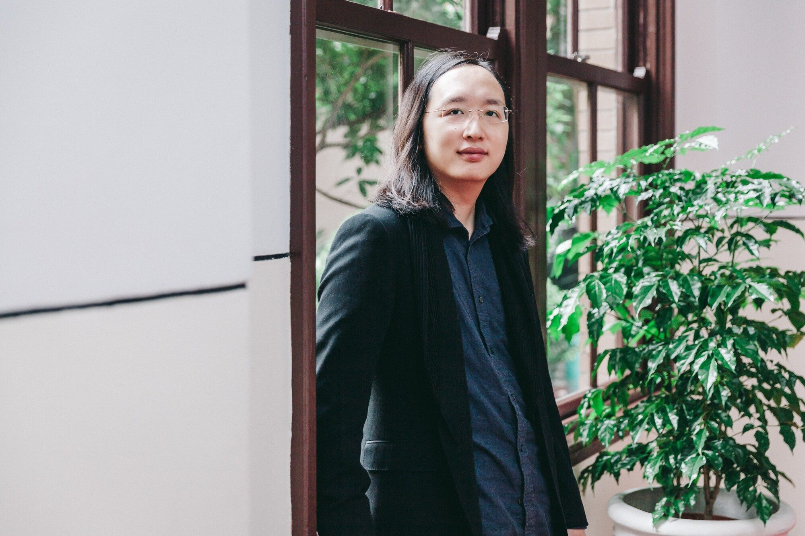

Audrey Tang is a civic hacker, co-author of Plurality: The Future of Collaborative Technology and Democracy, and an inaugural Senior Accelerator Fellow at the Oxford Institute for Ethics in AI.
Taiwan's first Digital Minister and the world's first nonbinary cabinet minister, Tang was awarded the 2025 Right Livelihood Award for "advancing the social use of digital technology to empower citizens, renew democracy and heal divides."
A child prodigy who practiced Taoism to manage a congenital heart condition, Tang left formal schooling at 14 to pursue entrepreneurship. By 24, Tang was already a leader in the free and open-source software communities, revitalising the Haskell and Perl languages.
唐鳳是公民黑客、《多元宇宙：協作科技與民主的未來》共同作者，也是牛津 AI 倫理研究院首屆加速哲人。
作為臺灣首任數位發展部長、全球首位非二元性別內閣成員，唐鳳於 2025 年獲頒正命獎，表彰其「推進數位科技的社會應用，賦權公民、更新民主並修補社會裂痕」的貢獻，是該獎項史上首位臺灣得主。
唐鳳從小資賦優異，練習道家功法抑制先天性心臟病，14 歲離開正規學校投身創業，24 歲時已是自由開源軟體社群的領袖，重振了 Haskell 與 Perl 程式語言的生態。
- Cyber Ambassador Taiwan
- Senior Accelerator Fellow Oxford Institute for Ethics in AI
- Co-Curator, TED 2026 TED Conferences
- Omidyar Senior Advisor Mozilla Foundation
- Senior Fellow Project Liberty Institute
- Plurality Initiative Advisor Ethereum Foundation
- 中華民國 數位治理無任所大使
- 牛津大學 AI 倫理研究院 加速哲人
- TED 大會 TED 2026 共同策展人
- Mozilla 基金會 Omidyar 資深顧問
- Project Liberty 研究院 資深學人
- 以太坊基金會 多元宇宙倡議顧問
We the People are the True Superintelligence
我們全民，才是超級智慧
Geothermal Democracy
地熱民主
The hamster runs faster in the wheel — but goes nowhere. On moving from “human in the loop of AI” to “AI in the loop of humanity,” and why democracy cannot be delegated.
倉鼠跑得越來越快——但哪裡也去不了。從「人類陷入 AI 迴圈」到「AI 進入人類迴圈」，以及民主不可委外的理由。
Technology, Democracy & AI
“To give no trust is to get no trust.” On Taiwan’s citizens’ assemblies, the illusion of polarisation, and how Civic AI built inside the occupied parliament became today’s Community Notes.
數位遷徙自由
讓 AI 從讓人上癮的「大火」，轉化為社群圍坐的「篝火」；搭橋演算法如何消弭對立、找出罕見共識。
Free the future — together
攜手共創無限未來
Civic AI & the 6-Pack of Care
仁工智慧 & 關懷六力
The dominant AI safety narrative is vertical: one superintelligent system, aligned once and for all to human values. But no amount of what is produces what ought to be. The 6-Pack of Care, developed with Caroline Green at Oxford, offers a horizontal alternative — many bounded, purpose-specific AI agents, each devoted to one community’s relational health.
These agents are modelled on local kami: guardian spirits bound to a specific place. A kami that knows “enough is enough” won’t cling to power or expand beyond its purpose. Instead of coding the “perfect” values once, the framework builds continuous governance rooted in care ethics — alignment by process, not by fiat. Six packs, drawn from Joan Tronto’s political ethics of care, make this concrete:
主流的 AI 安全論述是由上而下的：一套超級智慧系統，一次性對齊人類價值。但再多的「實然」永遠導不出「應然」。唐鳳與牛津大學的 Caroline Green 共同開發的《關懷六力》提供了水平的替代方案——眾多有邊界、針對特定目的的 AI 智慧體，各自專注服務單一社群的關係健康。
這些智慧體的概念來自 local kami（地神）：特定場域的守護者，明白「夠好就好」，不執著於權力，也不會擴張超出自身目的。這個架構並非一次性寫入「完美」價值，而是建構奠基於關懷倫理的持續治理——透過流程而非指令對齊。從 Joan Tronto 的政治關懷倫理延伸而來的六力架構具體如下：
Attentiveness
覺察力
What do the people closest to pain notice that we’re missing? Bridging algorithms surface cross-cutting concerns and amplify unheard voices — not the loudest ones.
最貼近痛苦的人注意到哪些我們忽視的需求？橋接演算法能凸顯跨領域的關切，放大未被聽見的聲音，而非最大聲的聲音。
Responsibility
負責力
Who is accountable, with what authority, and what happens if they fail? Engagement contracts with real deadlines, escrowed funds, and named officers.
誰負責、擁有什麼權限、失敗時有什麼後果？參與合約搭配明確的期限、託管資金、指名負責人。
Competence
勝任力
Does the system demonstrably work? Graduated releases, decision traces for every action, guardrails-as-code, and automatic rollback when thresholds are breached.
系統是否真的能運作？階段性釋出、每個行為都有決策軌跡、程式化的護欄，超過門檻時自動回溯。
Responsiveness
回應力
Can those affected correct the system — and does correction actually change it? Community-designed rewards, clear appeals with timers, and public repair logs.
受影響的人能否修正系統——且修正確實能改變系統？由社群設計的獎勵機制、明確的申訴時限、公開修復紀錄。
Solidarity
團結力
Does the ecosystem reward cooperation over lock-in? Data portability, federated trust & safety, and bridging metrics that make bad-faith factionalism mathematically visible.
生態系是否獎勵合作而非封閉？資料可攜性、聯邦式信任與安全、橋接指標能以數學方式識別惡意派系操作。
Symbiosis
共生力
Is the system bounded, sunset-ready, and incapable of imperial creep? Resource caps, non-expansion pacts, and succession plans. Complete the work and step back.
系統是否有邊界、具備日落條款、不會無止境擴張？資源上限、不擴張協議、繼承計劃，功遂身退。
Deliberative Poll on Deepfake Regulation
深偽治理審議式民調
AI-generated scam ads impersonating Jensen Huang were costing Taiwanese citizens millions of dollars. 200,000 text messages went out to randomly selected numbers across Taiwan, asking one question: what should be done? Thousands volunteered; 447 were chosen by lottery to mirror the country’s demographics. They deliberated in 44 virtual rooms. A Trustworthy AI Dialogue Engine synthesised their proposals the same day.
Three measures emerged — label unsigned ads as probable scams; hold platforms liable for losses from unsolicited deepfakes; slow down non-compliant services until they comply — actor-and-behavior regulation, not content moderation. 85% of the assembly agreed. The law passed with multiparty support. By 2025, impersonation ads on Taiwanese social media fell by 94%.
AI 生成的黃仁勳詐騙廣告讓臺灣民眾損失數百萬元。唐鳳發送 20 萬則簡訊給全臺隨機選取的號碼，只問一個問題：該怎麼做？數千人自願報名，最終透過抽樣選出 447 位符合全國人口結構的代表，在 44 個會議室線上審議，當天由可信任生成式 AI 對話引擎合成他們的提案。
最終產生三項共識措施：未簽署的廣告標示為可能詐騙、平台須為未經同意的深偽造成的損失負責、對未遵守的服務降速直到符合規範——針對行為者與行為管制，而非內容審查。85% 的與會者同意，法案獲得跨黨派支持通過，2025 年臺灣社群媒體上的冒用身分廣告已減少 94%。
Good Enough Ancestor
夠好的祖先
Oscar & Emmy-winning director Cynthia Wade's documentary on democracy, mortality, and the courage to leave a wider canvas for future generations. Best Professional Documentary Short, SCAD Savannah Film Festival. Screened at the Woodstock Film Festival and Athena Film Festival. 21 min.
奧斯卡與艾美獎得主導演 Cynthia Wade 執導的紀錄片，探討民主、生死，以及留給後代更寬廣舞台的勇氣。獲得 SCAD 薩凡納電影節最佳專業紀錄短片獎，於伍德斯托克電影節與雅典娜電影節放映。片長 21 分鐘。

Scholarly Writing
學術著作
- Science
- CACM
- McGill
- arXiv
- arXiv
- arXiv
- RSA Journal
- Digitalist
- Book
From Open Source to Open Government
從開源軟體到開放政府
Tang was instrumental in the creation of g0v (gov-zero), now one of the largest civic technology communities in East Asia, and played a pivotal role in the 2014 Sunflower Movement, facilitating digital consensus-building during the occupation of Taiwan's legislature. By bringing live streaming and civic tech into the movement, Tang proved that radical transparency could transform governance from the bottom up.
As digital minister in 2016, Tang implemented radical transparency and participatory democracy platforms, including Join.gov.tw with millions of users. Tang's tenure saw public trust in Taiwan's government rise from single digits to over 70%, driven by innovations such as the real-time Mask Map and 1922 SMS during COVID-19 and pioneering prebunking defenses against cyber interference in national elections. Tang transitioned to the ambassadorial role in 2024; the platforms, the methodology, and the legislation outlasted the tenure — which is what “complete the work and step back” was designed to mean in practice.
Before government, Tang made foundational contributions to open-source software — initiating over 100 projects on CPAN, leading the first working implementation of Perl 6 (now Raku) in Haskell, and creating EtherCalc with Dan Bricklin, the inventor of the electronic spreadsheet. Tang also served as a computational linguistics consultant to Apple (2010–2016), developing software used in Siri.
Currently, Tang is developing techno-communitarianism — a synthesis of her Plurality framework with Glen Weyl, and Patrick Deneen’s communitarian critique of liberalism — as a theory of Civic AI that fosters community rather than atomising it.
唐鳳是零時政府（g0v）的核心貢獻者，零時政府現在是東亞最大的公民科技社群之一。唐鳳也在 2014 年太陽花運動中扮演關鍵角色，在占領立法院期間推動數位共識建立。唐鳳將直播與公民科技帶進運動中，證明基進透明能由下而上翻轉治理。
2016 年就任數位政委後，唐鳳落實基進透明與參與式民主平台，包含數百萬人使用的公共政策網路參與平臺。唐鳳任內臺灣民眾對政府的信任度從個位數上升到超過 70%，推動的創新包含 COVID-19 期間即時上線的口罩地圖、簡訊實聯制，以及開創性的預先澄清機制，防禦選舉期間的網路干預。唐鳳於 2024 年轉任大使職務，這些平台、方法論、立法都比任期更長久——這正是「功遂身退」的實踐意義。
進入政府前，唐鳳對開源軟體作出基礎貢獻：在 CPAN 發起超過 100 個專案，以 Haskell 開發第一個 Perl 6（現稱 Raku）可行實作，並與電子試算表發明者 Dan Bricklin 共同開發 EtherCalc。唐鳳也於 2010 至 2016 年擔任蘋果的計算語言學顧問，開發 Siri 使用的軟體。
目前唐鳳正在發展科技社群主義：結合衛谷倫的多元宇宙架構，以及 Patrick Deneen 對自由主義的社群主義批判，作為仁工智慧的理論基礎，培養社群而非將個人原子化。
Connect
聯絡方式
For speaking engagements, contact ProjectSpeaker.
演講邀約請聯繫 ProjectSpeaker。